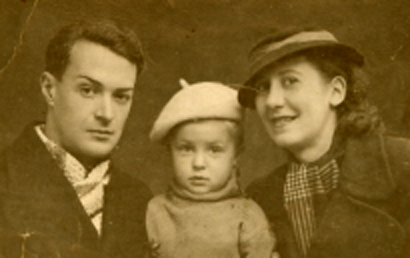
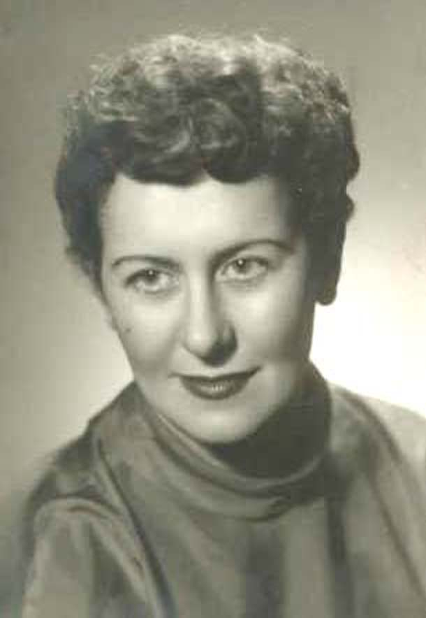
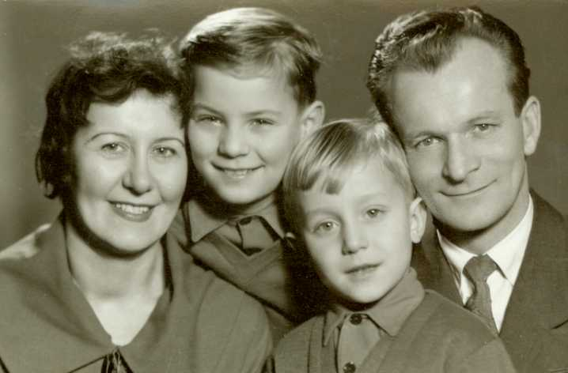
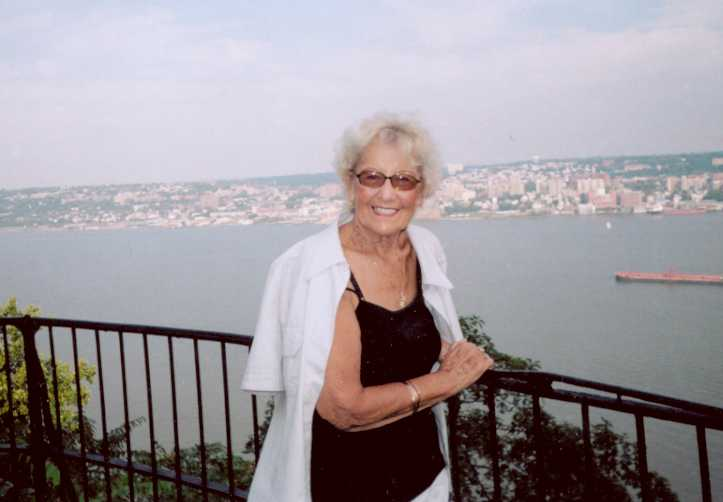

Лея (Баккал) Елена родилась 29 апреля 1919 года в Ялте.
Родители:
отец - Баккал Солмон Лазаревич,
мать - Баккал (Неживенская) Феодосия Васильевна.
Жила в Крыму - потом в Польше.
В 1941 году окончила Медицинский Институт в Симферополе.
Специализировалась в отрасли пульмонологии в Медицинской Академии в Познани.
Проработала врачом 45 лет, занимая должности главврача, заведующего туб. диспансера и директора больницы.
Была замужем два раза.
Мужья:
- Янчевский Аркадий (врач - хирург),
- Лея Марьян (инженер сельского
хозяйства).
От Аркадия Янчевского родила в 1940 году сына Вадима.
От Марьяна Лея родила двух сыновей:
в 1950 году - Марека,
в 1953 году - Юрия.
Ушла на пенсию в 1992 году.
Умерла 12 июня 2018 года.



